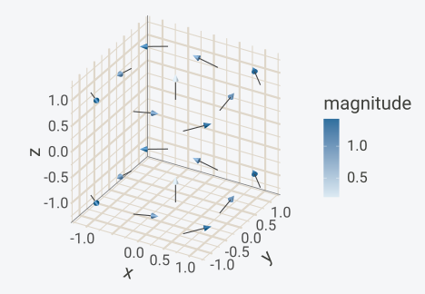
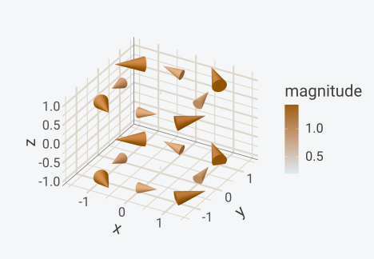
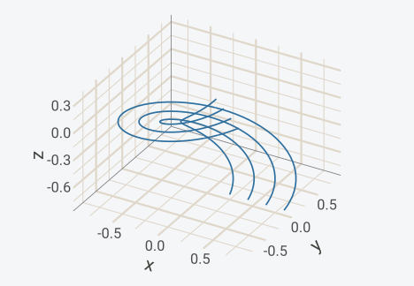

A vector field assigns a direction and magnitude to each position in space. This article draws arrows at sampled positions, then integrates curves through the field and gives those curves thickness. Installation is covered in Get started.
Map the position and vector components with
geom_quiver_3d().Trace curves through a regular grid with
stat_streamline_3d().Thicken the curves by choosing the tube geometry.
Example
The example field rotates around the z axis and rises at a constant rate. Its components are u = -y, v = x and w = 0.2. Sample it on a complete grid with five positions on each horizontal axis and three heights. Every x/y/z combination appears once; a missing component value stops a curve when it reaches the affected cells.
field <- expand.grid(x = seq(-1, 1, length.out = 5),
y = seq(-1, 1, length.out = 5), z = c(-1, 0, 1))
field$u <- -field$y
field$v <- field$x
field$w <- 0.2
head(field, 3)
#> x y z u v w
#> 1 -1.0 -1 -1 1 -1.0 0.2
#> 2 -0.5 -1 -1 1 -0.5 0.2
#> 3 0.0 -1 -1 1 0.0 0.2Arrows and cones
Each arrow starts at its mapped position and follows its three components. The length multiplier controls how much of the field is covered by one arrow. Draw a subset of the grid to leave room between arrows; the full grid will supply the streamline integration.
arrows <- subset(field, x %in% c(-1, 0, 1) & y %in% c(-1, 0, 1) & z != 0)
vectors <- ggplot(arrows, aes(x, y, z = z, u = u, v = v, w = w))
vectors + geom_quiver_3d(aes(fill = after_stat(norm)), scale = 0.4,
shaft = "tube", detail = 0) +
scale_fill_gradient(low = "#DCEAF3", high = "#2E6F9E", name = "magnitude") +
coord_3d(aspect = "data")
The computed magnitude remains available when arrows are normalised. Normalisation sets each input vector to unit length before the length multiplier is applied. A middle pivot centres the arrow on its anchor; tail and tip pivots attach the corresponding end.
vectors + geom_quiver_3d(aes(fill = after_stat(norm)), scale = 0.5,
normalise = TRUE, pivot = "middle", detail = 0) +
scale_fill_gradient(low = "#DCEAF3", high = "#2E6F9E", name = "magnitude") +
coord_3d(aspect = "data")
Cones use the same anchors and components, with each vector drawn as one solid cone. Their orientation follows the scale transformations and the aspect ratio. Zero-length vectors produce no geometry.
vectors + geom_cone_3d(aes(fill = after_stat(norm)), scale = 0.5, detail = 0) +
scale_fill_gradient(low = "#DCEAF3", high = "#9E5E0F", name = "magnitude") +
coord_3d(aspect = "data")
Streamlines from seed points
A streamline follows the field from a starting position, called a seed. Choose three seeds at different distances from the rotation axis. Trilinear interpolation supplies components between grid positions, and the adaptive Runge-Kutta integrator traces each curve forward through the field.
flow <- ggplot(field, aes(x, y, z = z, u = u, v = v, w = w))
seeds <- rbind(c(0.3, 0, -0.8), c(0.55, 0, -0.8), c(0.8, 0, -0.8))
lines <- flow + stat_streamline_3d(aes(colour = after_stat(arclength)),
seeds = seeds, method = "rk45", direction = "forward",
step = 0.08, max_steps = 90, linewidth = 0.9) +
scale_colour_gradient(low = "#2E6F9E", high = "#9E5E0F",
name = "distance") + coord_3d(aspect = "data")
lines
The stat exposes magnitude, step index, distance travelled and integration time. Distance accumulates along each output curve. Integration time is the parameter in the equation dp/dt = v(p); it has a physical time unit when the component units are distance per unit time.
trace <- layer_data(lines)
head(trace[c("x", "y", "z", "norm", "step", "arclength", "time")], 3)
#> x y z norm step arclength time
#> 1 0.3000000 0.00000000 -0.800 0.3605551 0 0.00000000 0.00
#> 2 0.2990405 0.02397441 -0.784 0.3605551 1 0.02883909 0.08
#> 3 0.2961682 0.04779546 -0.768 0.3605551 2 0.05767817 0.16Choose the fixed-step RK4 method for a fixed integration step. The adaptive RK45 method controls local error through its tolerance argument. The step argument sets the maximum time increment; speed determines the distance travelled in that increment. Both methods stop at the grid boundary, a missing field cell, zero speed or the step limit.
Seed rakes and planes
A rake distributes seeds along a line between two endpoints. Here four seeds start at increasing radii, all at the same height. A plane specification instead distributes seeds over the chosen coordinate plane.
flow + stat_streamline_3d(
seeds = list(from = c(0.25, 0, -0.8), to = c(0.85, 0, -0.8), n = 4),
direction = "forward", step = 0.08, max_steps = 70,
colour = "#2E6F9E", linewidth = 0.8) + coord_3d(aspect = "data")
For example, list(plane = "xz", at = 0, n = c(3, 2))
seeds an x/z plane at y = 0. Explicit seeds and plane positions use
original position units. Integration runs in transformed coordinates, so
components for a nonlinear position scale must use its transformed
units.
Streamtubes
The tube geometry sweeps a circular cross-section along each integrated curve. Radius uses transformed data units and sides controls the circular resolution. Here three tubes follow the same seeds as the line example.
flow + stat_streamline_3d(aes(fill = after_stat(norm)), geom = "tube",
seeds = seeds, direction = "forward", step = 0.1, max_steps = 60,
radius = 0.025, sides = 6, cap = "flat", colour = NA) +
scale_fill_gradient(low = "#2E6F9E", high = "#9E5E0F",
name = "magnitude") + coord_3d(aspect = "data")
Tube faces retain the mean computed values of their corners. The Surfaces, solids and fields article shows tube radii, ribbons and custom cross-sections on supplied paths.
Evenly spaced curves in a slice
Even spacing traces the field projected into each requested slice. Change the horizontal components to a flow along x with a sideways component proportional to x. In the x/y plane the vertical component is set to zero, so the output stays at the selected height.
Seed spacing controls the separation of candidate curves. The testing distance stops tracing as a curve approaches an accepted one.
shear <- transform(field, u = 1, v = 0.4 * x)
ggplot(shear, aes(x, y, z = z, u = u, v = v, w = w)) + stat_streamline_3d(
seeds = list(type = "even", plane = "xy", at = c(-0.5, 0.5),
spacing = 0.35, dtest = 0.15),
max_steps = 100, max_lines = 12, colour = "#2A7A7A", linewidth = 0.7) +
coord_3d(aspect = "data")
Automatic even seeding can produce no curves when the slice centre has zero projected speed, as in the rotating field above. Use explicit seed points to trace that field away from its stationary centre.
Where next
Surfaces, solids and fields: solid glyphs and sweeps along supplied curves.
Camera animation and interaction: move the camera or tween data between states.
geom_quiver_3d(): head, shaft, scale and pivot arguments.
stat_streamline_3d(): integration settings and seed specifications.